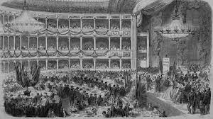

Osmanlı Tiyatrosu Namık Kemal, Ali Bey, Ahmet Mithat Efendi gibi oyun yazarlarını tiyatro içine çekmiş, bu yazarların tiyatro sanatçılarıyla elele birlikte çalışmalarına olanak sağlamıştır. Çoğunluğu Ermeni olan sanatçıların bozuk teleffuzlarını düzeltmişlerdir. Ayrıca Güllü Agop, tiyatro bilgisi ve deneyimiyle bir takım oyunları yazarlarıyla birlikte yazmıştır. Böylece tiyatrocu eylemi ile edebiyatçı eylemi güç birliği yapmıştır. Sahneye çıkan ilk Türk oyunu olan Mustafa Efendi’nin Leyla ve Mecnun oyunuda böyle bir işbirliğinin sonucudur. Osmanlı Devleti’nin ilk padişahları sade ve gösterişsiz bir hayat sürmüş olamakla beraber kısa bir zaman sonra saray, Selçuklularınkine uygun bir gelenekle kurulmuştur. Selçuk Sarayı’nda büyük ziyafetler verilir, çalgılar çalınıp şarkılar söylenir, şiirler okunur, hikayeler anlatılır, mudhik (güldürücü) ve mukallid (taklid edici) ler tarafından eğlenceler düzenlenirdi. Osmanlı Sarayı’nda da az zaman sonra böyle bir hayatın yerleşip kökleştiğini görüyoruz.
1839 Tanzimat Dönemi‘nin başlangıcı olarak benimsenirken aynı yıl tiyatro bakımından da bir önem taşır. Bu yıl tiyatro binalarının yapımının yoğunlaştığı yıldır.Türkler ilk bakışta kendi geleneksel tiyatrolarıyla Batı Tiyatrosu arasında 2 önemli ayrılık görüyorlardı. Bunlardan ilki geleneksel tiyatromuzun bir sahne üzerinde ve bir tiyatro binasında oynanmayışına karşı Batı Tiyatrosunun sahne üzerinde ve tiyatroda oynanışıdır. Bu nedenle ayrımı belirtmek için Ortaoyuncular sahne üzerinde oynadıklarında bunu ‘perdeliye çıkmak’ deyimiyle karşılıyordu.
Batılılaşmada girişim padişahlardan gelmiştir. Batı tiyatrosu içinde bu böyle olmuştur. Ayrıca tiyatroya karşı dinden ve gerici çevrelerden gelecek karşıcılıkta gene padişah-halife’nin tiyatroya gösterdiği yakın ilgi ile sönmüştür. Saray daha baştan beri geleneksel tiyatromuz için uygun bir ortamdı. Genel şenliklerde seyirlik oyunlara saray geniş ölçüde önem verdiği gibi ,saray içinde de bu oyunların eğitimi ve gösterileri düzenlenmişti.Padişahların daha önceki y.y.’lardaki ilgilerini bir yana bırakarak Batılılaşmanın bilinçleştiği III.Selim çağını alırsak bu yenilikçi sultanın çağında Batı Tiyatrosunun artık Türkiye’ye girdiğini söyleyebiliriz. II. Mahmut çağında tiyatroya ilginin daha da çoğaldığını görüyoruz. İki tane anfiteatr kurulmuştur. İlk başlarda sarayda temsil veren sanatçılar daha çok gözbağcılar ve sirk topluluklarıydı. Ancak ileride de görüleceği gibi bunların tiyatronun gelişmesinde önemli yeri vardır. Saray içinde önce geçici tiyatrolar yapıldı. (Çırağan Sarayı’nda,daha sonra 1856’da Dolmabahçe Sarayı’nda) Padişahların dışarıdaki tiyatrolara ilgisi,bunları fermanla ve ödenekle desteklemesi tıpkı Avrupa ülkelerinde olduğu gibi sultanın ve yabancı konukların gidebileceği bir tiyatronun olması , sarayın saygınlığı içindi. II.Abdülhamid döneminde ya saraydaki yerli ve yabancı sanatçılarla temsil düzenlenmiş, yada dışarıdan gelen topluluklara ve sanatçılara saray tiyatrosunda temsiller verdirmiştir. Asıl önemlisi sarayın kendi sanatçılarıyla düzenlediği Türkçe temsillerdir. Unutmayalım ki ilk Türk oyunu olarak benimsediğimiz İbrahim Şinasi Efendi’nin Şair Evlenmesi komedyası Dolmabahçe Saray tiyatrosunda oynanmak üzere yazarına ısmarlanmıştı.Abdülaziz çağında saray ve çevresinin tiyatrosu kısıtlanmış olmakla birlikte tersine dışarda Türk Tiyatrosu altın çağını yaşamıştır. Bunu ise padişahtan çok, yüksek devlet görevlilerinin katkısı ve çabasına borçluyuz. Abdülhamid çağında ise tam tersine saray dışı tiyatro can çekişecek kadar kısıtlanmış, saray tiyatrosu ise saray içi ve saray dışından yerli ve yabancı sanatçılarla güçlenmişti.
Batı Tiyatrosu ile tanışıklığımızda ve bu tiyatronun ülkemizde gelişmesinde saray ve çevresi ölçüsünde belki daha da önemli bir etken olarak devlet görevlilerinin, dışarıya giden Türk elçilerinin ve yeni gelişmekte olan basın ve yayınında önemli katkısı vardır. Saraya koşut olarak devlet adamları da konaklarında Batı Tiyatrosu ve müziğine önem veriyorlardı. Avrupa Tiyatrosu’nun tanınmasında Tanzimat öncesi ve sonrası kurulan elçiliklerimizinde önemli katkısı vardır. Asıl görevleri diplomatik ilişkilerin yanısıra, elçiliklerimizden gittikleri ülkede Türkiye’nin batılılaşmasına katkısı olacak bilgileri vermeleri istenmişti. Tiyatronun tanınmasında basının önemli yardımı görülmüştür. Tiyatro duyurularına, haberlerine, eleştirilerine ve özellikle Avrupa’daki tiyatro yaşamı üzerine verdiği bilgilerle halkı tiyatro konusunda aydınlatıyorlardı. Hatta oyun metinlerine de yer veriyorlardı.
Kimi elçiler, elçilikleri içinde tiyatro yaptırıp, burada temsiller verdirmişlerdir, bu temsillere Türkler seyirci olarak gelmiş, temsillereTürk oyuncularının da kendi gösterileriyle katıldığı olmuştur. Elçiler ayrıca dışardaki, özellikle kendi ülkelerini ilgilendiren temsilleri çeşitli yollardan desteklemişlerdir.
Azınlıklar denilince ilk akla gelen Yahudiler, Rumlar ve Ermenilerdir. Ancak özellikle Avrupa’dan gelen çeşitli nedenlerle Türkiye’ye yerleşmiş Levantin ve Türkçe deyimiyle Tatlısu Frenkleri’ni anlamak gerekecektir. Bunlar arasında özellikle İtalyan, Fransız ve Almanları düşünmemiz gerekir. Bu topluluklar için tiyatro binaları yapılmış, düzenli temsiller verilmesi sağlanmıştı. Bunların katkıları daha çok Türkiye’ye yerleşik azınlığın kendi olanaklarıyla ve kendi aralarında sürdürdükleri tiyatro yaşamıdır. Türkiye’de Batı Tiyatrosu’nun başlaması ve gelişmesinde Ermeni azınlığın katkısı çok önemlidir.
Temsil için dışarıdan sık sık yabancı sahne sanatçıları ve toplulukları gelirdi. Bunlar yanlız seyircinin yetişmesi ve sahne sanatlarını tanıması bakımından değil, yerli sahne sanatçıları ve tiyatro adamlarının görgü ve bilgi kazanmaları, yerli toplulukların oyun dağarları, yerli yazarların Avrupa Tiyatrosunu tanımaların bakımından önemli katkıları olmuştur. Tiyatro binalarının yapılmasında da doğrudan doğruya yada dolaylı payları vardır.
Geleneksel Tiyatromuz doğaçlamaya dayandığından bir yazılı metin söz konusu değildi. İlk Türkçe oyun sarayın ısmarlaması üzerine 1859’da Şinasi tarafından yazılan Şair Evlenmesi‘dir. Türkçe oyun yazılmasında veya Türkçe’ye yabancı oyunların çevrilmesinde katkısı olan bir kurum Doğu Dilleri Okulu’dur. Bu okulda Fransız ve başka ülkelerden gelen gençlere Türkiye’deki elçiliklerde görevlendirilmek üzere Arapça, Farsça ve Türkçe öğretiliyordu. Yabancı elçiliklerde çevirmen olarak kullanılan Ermeni, Yahudi ve Rumların çeşitli nedenlerle işe yaramadıkları görülünce bunlara tiyatro oyunu çevirileri işi verildi.Osmanlı Tiyatrosu’nun kuruluşunu ve sona erişini kesin olarak saptamak güçtür. Bu kuruluştan ve sona erişten ne anladığımıza bağlıdır. Güllü Agop’un bu sırada kurduğu topluluğun adı Asya kumpanyası idi. OsmanlıTiyatrosu adı altında ilk Türkçe Gösterimini verdiği yıl olan 1868’i benimsemek daha uygun gözüküyor. Osmanlı Tiyatrosu’na asıl gücünü veren 1870 yılında devletin tanıdığı tekel imtiyazıydı. Nitekim bu imtiyazı aldığı yıldan başlayarak tiyatro hızlı bir gelişme göstermiştir; daha önemlisi Türk aydınları, yazarları ve devlet adamlarıyla sıkı ilşkisi bu yıldan sonra artmıştır. Sona erişe gelince burada da çeşitli tarihler düşünülebilir. Eğer Osmanlı Tiyatrosu adına bağlı kalacak olursak, bu adı Güllü Agop’tan sonrada kullananlar olmuştur, öyleki Meşrutiyet döneminde de adı Osmanlı Tiyatrosu olan topluluklar vardı. On yıl için verilen tekelin işlerlik gücü 1880’den daha önce azalmıştı. Buna karşı, Güllü Agop tekelin sona erdiği yılda da, duyurularında imtiyaz sahibi olduğunu gösteren başlıkları kullanagelmiştir. Kimi görüşe bakılırsa Gedikpaşa Tiyatrosu’nun yıktırılış yılı olan 1884 tarihi önemlidir. Ancak bu yıl, başka bakımlardan önemli olmakla birlikte Osmanlı Tiyatrosu’nun sona erişi olarak kabul edilemez.
Batı Tiyatrosu’nun gelişmesi, Türk yazarlarının dramatik sanatla ilgilenmesi, profesyonel tiyatroculuğun gelişmesi kadar, her bakımdan örnek bir kültür kuruluşu olan ve izleri günümüze kadar gelen Osmanlı Tiyatrosu’nu kuran, geliştiren, ona yön veren Güllü Agop üzerine tiyatroculuğu dışında bilgimiz pek azdır; doğum ve ölüm yılları bile kesin değildir. Güllü Agop’un tiyatroda adına ilk 1862’de rastlıyoruz. Şark Tiyatrosu, dönemi 5 Mayıs 1862’de Hugo’nun Kral Eğleniyor’u ile kapatmıştı. Agop burada sahneye çıkmış ve herkes tarafından beğenilmişti. Bundan sonra sahneye koyucu ve oyuncu olarak katıldığı İzmir’de Vaspuran Tiyatrosu’nda ve sonra başına geçtiği Asya Kumpanyası’nda çalışmalarına devam etmiştir. Güllü Agop tiyatroculuk yaşamında hep Türk ve Ermeni toplumları arasında sıkışmış, bocalamış, iki yanı da hoşnut etmeye çaba göstermiştir.